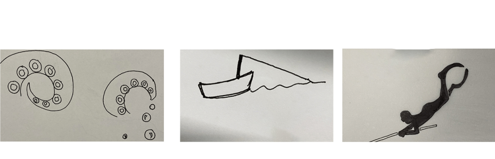
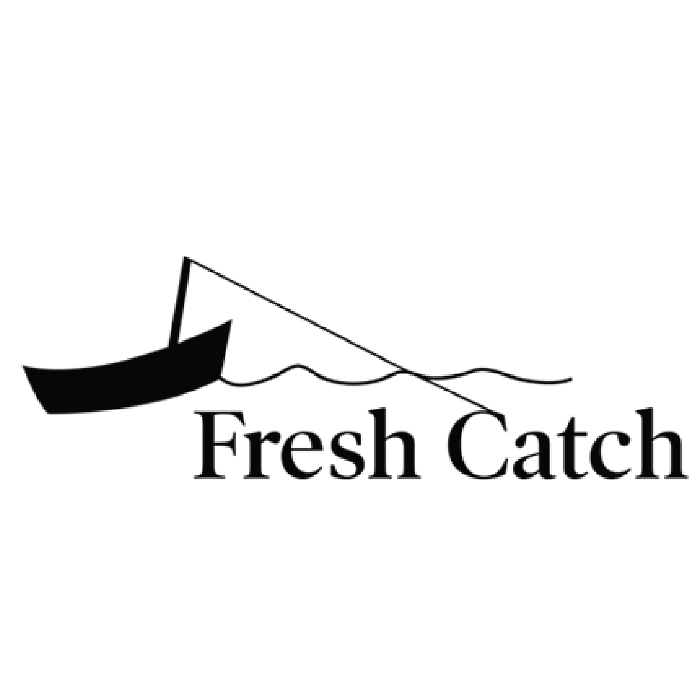

Logo Design
Re-designing Fresh Catch
Sketches

Into Adobe Illustration
Octopus
I took part of the original logo with was the whole image of an octopusThis logo seems like it was a place that sales sushi rolls and the image turn out to look like one which did not seem to represent what the businese expectation

Boat
This logo was my second favorite because the logo and the typeface are interacting with each other.

Final Logo
This is the final logo that everyone in class had voted for, this logo connects to the owner of their small business and their history of spear fishing something about catching your own fish seems so fresh.